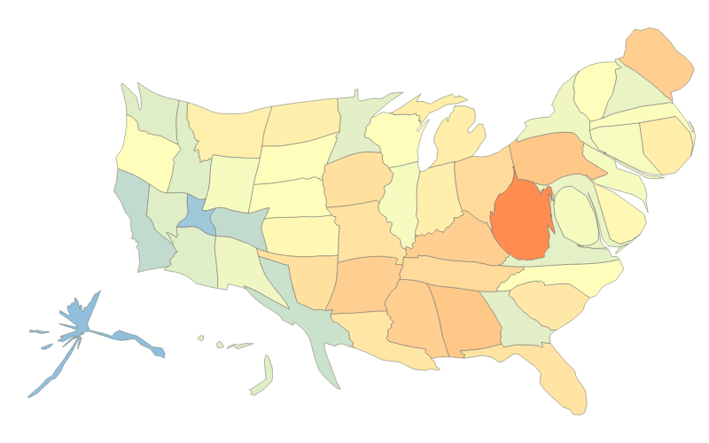

Census Data is downloaded from U.S. census bureau about all 50 U.S. states including 1708 unique variables across 3 categories: social (596 variables), economic (549 variables) and housing (563 variables). Two types of data files are used: a meta file describing the meaning of each field and a data file including detailed records. Due to time limitations, we haven't downloaded all census tables on the state level which roughly sum up to 40k tables. Total number of census table is ~50k. Although we only experiment on mapping the census, TransMapper is adaptable for mapping many other datasets by providing similar attribute schemas and geographic data.
Geographic Data, state polygons, are originally TIGER shipefiles and converted using ogr2ogr to GeoJSON and then to TopoJSON for representation in D3. Although state polygons are used here, we suggest users to follow similar procedure described here to prepare your own spatial data for mapping in D3.
cartogram.js is a JavaScript implementation of an algorithm to construct continuous area cartograms, by James A. Dougenik, Nicholas R. Chrisman and Duane R. Niemeyer,©1985 by the Association of American Geographers. In cartogram, each polygon is rescaled in proportion to the attribute data with large value to be enlarged and small value to be shrinked. While preserving the shape and topology as large an extent as possible, Cartogram contrasts the differences in quantities through the art of exaggeration and distortion.
Natural language interface is useful for quickly filtering textual data. Here, we implement two filters to narrow down all census attributes to a small subset that are relevant to users' queries. Two measures are (1) Jaro-Winkler string distance to measure the similarity between two strings and (2) Metaphone algorithm to measure the similarity between the phonetic sounds of two strings. The sum of all similarity scores in a description is used as final similarity score of the description. We rank all attributes by their description and list top 20 to the users.
Tag cloud of our census data: